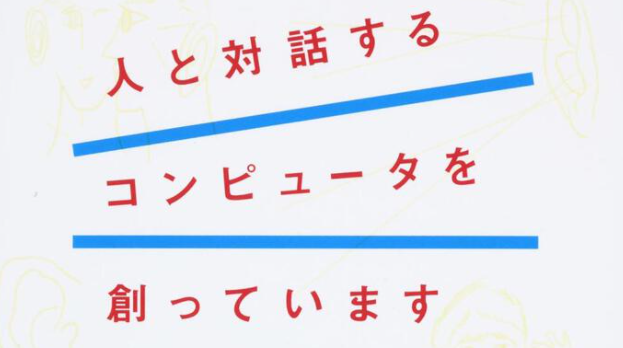

Pythonを使って初めて音声認識に挑戦するとき、具体的にどのように音声認識をするのか、どのように勉強すればいいのか分からない…という人は少なくないでしょう。
今回は、そんなプログラミング初心者に必見の内容です。
Pythonを使って音声認識するにはどのように勉強すればいいのか、また音声認識とは具体的に何なのかという基本的な情報に加え、Pythonで音声認識をする方法を解説していきます。
プログラミング初心者のあなたもPythonを使った音声認識に挑戦してみましょう！ぜひ参考にしてみてくださいね。
Pythonで音声認識をするために学ぶべきこと
Pythonは、他のプログラミング言語に比べて文法がわかりやすく簡単であることから、初心者にも使いやすい言語です。
主に画像処理や機械学習、音声認識の分野で多く使用されています。最近では、AI・人工知能の分野を中心に活躍していることもあり、その注目の高さがうかがえます。
中でも音声認識は、初心者には難しいスキルが必要で難易度が高いと思ってはいませんか？
安心してください。
現在では、初心者にも優しい環境が整いつつあり、初心者でも音声認識に挑戦しやすくなっています。
それでは、Pythonで音声認識をするためには具体的に何を学ぶべきか見ていきましょう。音声認識とは何かという基本的な情報も合わせて解説するので、初心者の方でも安心して読み進めてみてくださいね。
音声認識とは
Pythonで開発できる音声認識は、実は私たちの身近な場所に存在しています。
例えば、Apple社のsiriやAmazon社のアレクサなどが代表的です。
「今日の天気は？」「音楽をつけて」など、スマートフォン上で実際に操作することなく、コンピューターが自動的に機能してくれますよね。
通常、私たち人間は発せられる言葉をそのまま理解します。
これに対してコンピューターは数字に変換された言葉しか理解できません。
そのため、コンピューターに言葉を理解させるには、私たちが発声する言葉（音）を数字に変換することが必要です。
例えば、「あ」という言葉を録音すると「あ」を表す波が記録されます。
コンピューターはその波のパターンから、この音が「あ」だということを認識するのです。そうすることで、まるで私たちが発する言葉を理解したような返答が可能になります。
最近では、スマートフォンやスマートスピーカーなどの台頭により、言葉を数字に変換して解析する音声認識の利用が拡大しつつあります。
今後はさらに、音声認識の需要が高まり、必要になってくるでしょう。プログラミング初心者の方も、今から勉強しておきたい分野です。
音声認識に必要なPythonのスキル
では、音声認識を勉強するうえで必要な知識や求められるPythonのスキルとは、具体的にどのようなものでしょうか。
まず、Pythonをしっかり使いこなせるようになることです。
文法を覚えたり、使い方を習得するなどPythonの基礎をしっかりと身に付けなければ、音声認識を作ることができません。そうした基礎的な勉強を怠らずに、Pythonを理解することから始めるのが大切です。
さらに、Pythonのスキルのひとつである「通信」を習得する必要があります。
「通信」とは、他のコンピューターとデータのやり取りを行う働きのことです。本来、音声認識は自身のコンピューターで行うには、データの処理が重かったり、無料版で使用できる範囲が狭かったりと限界があります。通信について学ぶことで、データを素早く解析出来るようになり、音声認識をより高い精度で行うことが可能になります。
音声認識が学べるおすすめの書籍3選
ここからは、初心者におすすめの書籍3冊を紹介していきます。
①『人と対話するコンピュータを創っています 音声認識の最前線』
引用元：『人と対話するコンピュータを創っています 音声認識の最前線』
まずは、音声認識の概略をつかむのに適している「人と対話するコンピュータを創っています 音声認識の最前線」です。初めて音声認識を扱う人にも分かりやすく、読みやすいのが特徴です。
機械学習をする際に必要な難しい「数式」などが出てこないので、安心して読み進められます。コンピューターがどのように音声を認識するのかという基本的な情報から、音声認識装置の作り方のアウトラインまで、より専門的な知識も習得できるとあり、これから音声認識を覚えたい人にはぴったりの1冊です。
②『イラストで学ぶ音声認識』
引用元：『イラストで学ぶ音声認識』
タイトルの通り、本書には図式やイラストが多く用いられており、文章だけでは難しい印象を与えるプログラミング言語が、分かりやすく解説されています。
本書だけで音声認識のことを網羅でき、初心者でも取っ付きやすく理解しやすい1冊でしょう。
③『音声認識（機械学習プロフェッショナルシリーズ）』
基礎からしっかりと学びたい人におすすめです。本書の第1章に「音声とは」と始まる通り、音声認識について全く理解していない人をターゲットにしているため、これから勉強したい人におすすめの1冊です。
読み進めていくうちに、音声認識をしっかりと理解できるようになるでしょう。
Pythonで音声認識をする方法
ここからは、より本格的な実践編に入ります。
Pythonでどんな音声認識ができるのか、具体的にどうしたらいいのかを解説していきます。Pythonで音声認識を習得して、スキルを身につけましょう！
Pythonでできる音声認識とは
では、Pythonを用いるとどのような音声認識ができるのでしょうか？
一般的なのは、私たちが発する言葉をコンピューターがテキスト化してくれる「文字起こし」です。さらに高度なものとなると、複数人が喋っている言葉にも対応できるようになります。例えば、会社の会議で必要な議事録としても使用することが可能になるわけです。
他にも、APIと呼ばれるサービスを利用することで、Pythonでもより精度の高い音声認識が可能になります。APIとは、Application Programming Interface の略称です。簡単に言うと「アプリケーションやソフトウェア」と「プログラム」を繋ぐもの、とイメージしてみるといいでしょう。
例えば、APIに音声ファイルを送付します。すると、API内で音声を解析してくれます。利用者は、APIから送られてくる音声ファイルの解析結果を待っているだけで、変換されたテキストを手に入れられるのです。
Pythonで音声認識をするために開発環境を整えよう！
Pythonでどのような音声認識ができるのか分かったところで、実践に取り掛かりましょう。
Pythonを使う準備
まずは、Pythonを使用するにあたり環境を整えなければなりません。
通常、コンピューター上にはPythonを使用するプログラムは内蔵されていません。まずは、Pythonをインストールする必要がありますね。
Pythonの公式ページをクリックすると、ダウンロードできるページが表示されるので、OS別（Windows・Mac・Linux）にインストールしましょう。
Python公式サイトはこちら
APIを使う準備
Pythonのインストールが完了し、上記で紹介したAPIを使用する場合は、使用するAPIの公式サイトでアカウント登録をする必要があります。
多くのAPIは、無料で使える範囲が決められているので、注意が必要です。個人で練習する範囲であれば問題ないでしょう。さらに、オフラインでは使用できるAPIも限られているので、事前にチェックしてくださいね。
ライブラリを使う準備
APIの他にも、音声認識をするための「ライブラリ」というツールがあります。
ライブラリとは、他の人が作ってくれたプログラムを自分のプログラムの中でも使用できる便利なツールのことです。音声認識をするにあたり、ライブラリを利用することで、簡単に音声ファイルを変換できます。代表的なライブラリとして「julius」があります。
juliusは高性能な「汎用大語彙連続音声認識エンジン」として知られており、 数万語彙の連続音声認識を可能にします。一般のコンピューターでも使用できるので、ダウンロードしてみるのもいいでしょう。
julius公式サイトはこちら
Pythonで音声認識をする手順
Pythonを用いて音声認識をする準備が整えたら、実際に音声認識をする実践に移りましょう。音声認識をするには、音声ファイルをコンピューター上に取り込む方法とマイクから音声を取り込む方法の2通りがあります。
音声ファイルを取り込む
まずは、音声ファイルからやってみましょう。
最初に、文字起こししたい音声ファイルをコンピューター上にアップロードします。
音声ファイルの形式はWAV形式という音声データに変換しましょう。
次に、変換したファイルをAPIに投げます。すると、API内で自動的に音声データを文字起こししてくれます。これで音声ファイルを文字起こしする手順は終了です。
ライブラリを使用する場合も同様です。
マイクから音声を取り込む
マイクから音声認識をする場合も基本的には同じです。
まずは録音したファイルをWAVファイルとして保存します。WAVファイルを読み込ませることで、マイクからの音声認識が可能になります。
上記の方法と同様に、APIやライブラリに音声ファイルを投げることで、自動的に文字起こししてくれますよ。
Pythonの個別指導なら『Tech Teacher』
 引用元：Tech Teacher
引用元：Tech Teacher
このBlogを運営するTech Teacherは、Pythonを学習する社会人を対象に、初心者から挫折した人まで、一人ひとりの目的や学習状況にあわせた個別指導を行っています。
また、オンライン指導も選べるので、自宅でも対面でも受講できます。
一人ひとりに最適化された完全マンツーマン指導を提供
完全マンツーマン指導で着実に身につく！
Tech Teacherでは専任の教師が完全マンツーマン指導を行います。
学習状況や目標をしっかり把握した教師が、生徒様のご要望もふまえながら最適なオーダーメイドの指導をご提供します。
お仕事と両立しながら続けられる！
Tech Teacherなら、受講日時や回数を生徒様のご都合に合わせて柔軟に調整することができます。
そのため、お仕事との両立がしやすく、プログラミング学習を継続的に学習することができます。忙しい合間にプログラミングを学びたいという方におすすめです。
授業料は受けた分だけ！
Tech Teacherでは、生徒様が受けた授業の時間分だけ後払いで請求させていただきます。そのため、気軽にプログラミングの学習を始めることができます。
以下のボタンからさらに詳しい情報をご覧いただけます。
Pythonで音声認識に挑戦しよう！
今回は、Pythonを用いた音声認識の方法を解説しました。
一見難しそうに見える音声認識ですが、APIやライブラリを利用すれば、初心者でも簡単にできることが分かりましたね。
今まで遠ざけていた方も、これから音声認識をやってみたい方も、Pythonを使って音声認識に挑戦してみてはいかがでしょうか。